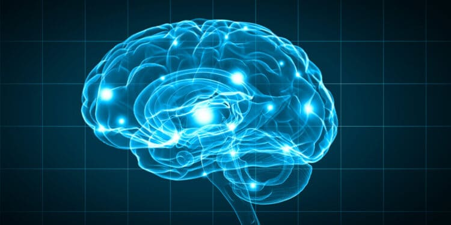

What is Neuroplasticity?
Neuroplasticity can be viewed as a general umbrella term that refers to the brain's ability to modify, change, and adapt both structure and function throughout life and in response to experience - Montreal Neurological Institute, McGill University, Montreal, QC, Canada. Neuroplasticity is often reffered to as the process of which permanent learning takes place in your brain and enables people to develop any area in life that they decide ot ivenst their time in.
Discuss how understanding the principles of neuroplasticity benefits people
There are many ways that Neuroplasticity can benefit people, the process itself can help adapt and change your brain, and this can promote:
- The ability to learn new things
- The ability to enhance your existing cognitive capabilities
- Recovery from strokes and traumatic brain injuries
- Strengthen areas if some functions are lost or decline
- Improvements that can promote brain fitness
How will I engage with the principles of neuroplasticity for my own benefit?
I would like to apply these principles towards the development of new/different areas of interest in my life. In particular, now is a great time to apply these principles on my journey through this course. I also want to use this knowledge to improve my general learning skills so that if I decide to learn a new topic or exercise in the future I am more capable of doing so, especially on things I have never done before!
What are some of the ways to increase your neuroplasticity?
There are many ways you can increase your brains development process, here are three that science has proven to be successful:
- First is by understanding that the brain is actually capable of change and creating an awareness that you can learn new things. Having this knowledge and belief is the first step towards promoting change and growth in your mind/brain. According to neurologist and educator Judy Willis, her research found that both morale and grade points for students increased when students are made aware that they are physically capable of building knowledge and changing their brains to improve their ability to learn. Especially for students who believe they are ‘not smart’, the realisation that they can literally change their brains through study and review is empowering.
- Repetition. Practice, practice, practice, practice!!!!! This builds the newly developed neural pathways in the brain and helps them to become stronger and thicker. Without this process the brain will eliminate, or ‘prune’, the connecting cells that formed those pathways. As mentioned by neurologist Judy Willis, “Practice makes permanent. The more times the network is stimulated, the stronger and more efficient it becomes.”
- Putting things into context is also key! There is a common saying that Neuroscientists have used since the late 1990’s, “cells that fire together, wire together”, meaning if you perform a task or recall some information that causes different neurons to fire, it strengthens the connections between those cells.
The following are links to the resources I found useful when researching this topic of Neuroplasticity:
TheVeryWellMind.com - What is brain plasticity? Edutopia.com - Brain based learning - NeuroplasticityGrowth Mindset
A growth mindset is the awareness one has of their ability to learn or get better at something, and then make the choice to do so. Alot of times people can find themselves in self-doubt or disbelief in their capacity to learn and grow, also known as 'Fixed mindset', so will accept their current state and not commit to any change. If they were aware that science has proven they are more than capable of learning they would find themselves in a much better situation. This topic is relevant because it influences a persons ability to learn and develop themselves effectively.

In this exploration, did anything surprise you? Change for you?
No new changes, but reading through this material provided a good opportunity to go over the key concepts again and rehash the importance of understanding how the bran works and what you are capable of achieving. Especially in the context of learning, knowing that you have the potential to learn anything is powerful especially if it is backed by science.
How will you integrate growth mindset into your learning journey?
I will be implementing the growth mindset principles by setting some time at the beginning of each day to go over some positive affirmation exercises. Your thoughts influence your actions so it is important to keep those thoughts that serve you and reconsider those that don't, especially in a learning environment.
The following are links to the resources I found useful when researching Growth Mindset:
Buffer.com - Habbits of successful people Themarginalian.corg - Carol Dweck mindsetHow will these understandings shape or influence your learning plan and strategy?
One aspect of my learning plan that will benefit from these learning principles is the belief and knowingness that I am capable of learning knew skills and concepts. In my learning plan I listed 4 skills that I would like to develop while I am here at Deve academy, all of which are related to the development of my own learning skills. Having a growth mindset and understanding the power of neuroplasticity will support me in the development of those skills. Knowing what it is I want to achieve is the first step, using these tools and applying these principles will help me to get there!
Thank you for reading my blog, I hope this helped you to understand better the concepts of Neuroplasticity and having a Growth mindset. Have a great day!